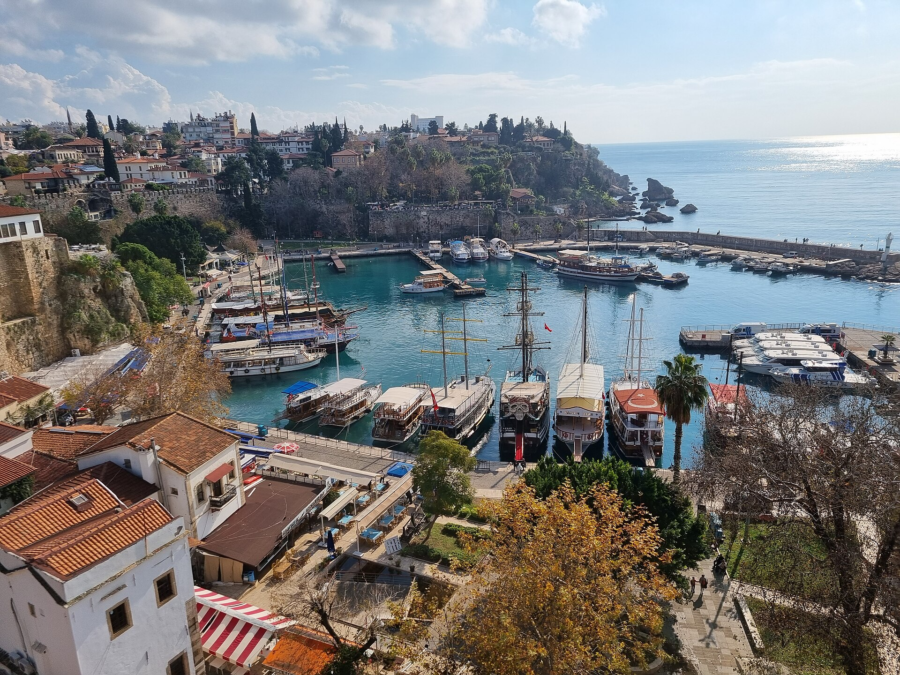

Vol. I · No. 179 · Monday, November 23, 2026 · 9 items · 7.4 min read
CrowdStrike signs a $43.9 billion deal for Zscaler; Reuters details the terms Anthropic set for its banks; COP31 ends in Antalya with no deal; and Ukraine says it sank a Russian warship off Libya.
Markets & Deals · Austin, Texas
CrowdStrike agrees to buy Zscaler in a $43.9 billion all-stock deal, three days after the two were reported to be in talks
The Nasdaq MarketSite in Times Square. CrowdStrike and Zscaler both trade on the Nasdaq. ajay_suresh, CC BY 2.0 / Wikimedia Commons
CrowdStrike agreed on Monday to acquire Zscaler in an all-stock deal that values the network-security company at about $43.9 billion, the companies said, three days after Bloomberg and Reuters reported talks. Zscaler holders will receive for each share they own, worth about $260.41 at CrowdStrike’s Friday close and a premium of about 34 percent.
We see a path to become the largest AI safety and security company the world has ever seen.
George Kurtz, CrowdStrike, Nov. 23
Both boards approved the deal unanimously. Jay Chaudhry, Zscaler’s founder, and his affiliates, who hold about 34 percent of its shares, signed voting agreements. CrowdStrike holders will own about 84.1 percent of the combined company, and Chaudhry will keep running the Zscaler business and join CrowdStrike’s board. The deal needs a and regulatory approvals, and is expected to close in the second half of CrowdStrike’s fiscal 2028. Davis Polk & Wardwell is counsel to CrowdStrike, with Qatalyst Partners as lead financial adviser. Wilson Sonsini Goodrich & Rosati advises Zscaler, with BDT & MSD Partners leading its bankers.
The companies target $500 million of annual cost savings within 24 months and about $1 billion a year of within 30 months. They say combined will start above $10 billion. Zscaler rose more than 13 percent before the open, Reuters reported. Enterprises are cutting the number of security vendors they use and buying several products through one relationship, Reuters said, and the deal joins CrowdStrike’s endpoint business to network security.
AI · New York
Anthropic capped its 22 banks at four senior bankers each and paid no fee on the overallotment, Reuters reports
Anthropic told the 22 banks underwriting its initial public offering to staff no more than four senior bankers each and asked some to keep core deal-team members from working for OpenAI, Cursor, DeepSeek or Hugging Face for six months after the listing, Reuters reported on Sunday. Like before it, the company negotiated to pay underwriters nothing on the , the report said. The banks still earned more than half a billion dollars on the deal, known internally as Project Lantern.
The process chafed some bankers, Reuters said. A draft with wrong price-range and share figures was pulled, and the corrected version went out around 2 a.m. New York time, leaving the banks several hours to sign off. Anthropic, Goldman Sachs and Morgan Stanley declined to comment, according to Fox News. The stock rose 17 percent on its first day and fell 8.5 percent on Friday, still above the $83 offer price.
AI
Who writes the rules
AI · Washington
Governors ask Congress for one national AI framework that leaves states the power to regulate how AI is used
The Capitol’s west front. The governors want Congress to write the national rules. Architect of the Capitol, public domain / Wikimedia Commons
The on Sunday released six principles for federal AI policy, proposing that Washington handle national and international risks while govern how AI is used within their borders. The council is led by Maryland’s Wes Moore and Indiana’s Mike Braun, with North Carolina’s Josh Stein and Utah’s Spencer Cox. The principles tie safeguards to evidence of risk, call for less overlap between federal and state rules and say rules should not favor large companies. “Humans must stay in control,” Moore said.
AI · San Francisco
OpenAI’s chief scientist proposes shared capability limits measured by perplexity, and publishes OpenAI’s own scores
Jakub Pachocki, OpenAI’s chief scientist, proposed on Sunday that AI developers commit to “common limits, based on and other measurements” that none would cross until catches up. In an essay, he published OpenAI’s scores on its main internal evaluation set for the first time: about 0.99 for GPT-3.5, 0.91 for GPT-4 and 0.76 for the model now producing results on open math problems, with the next step expected near 0.68 to 0.70. The essay sets no value or date for a first limit.
Markets & Deals
The curve before the holiday
Markets & Deals · Washington
Treasuries enter Thanksgiving week after a 19-basis-point rally, with $69 billion of two-year notes for sale on Monday
The Treasury Building in Washington, which sells $183 billion of notes this week. MeanieHyaena, CC BY 4.0 / Wikimedia Commons
Treasury yields fell 19.5 basis points last week, to about 4.65 percent, and 10-year yields fell 19.1 basis points, to about 4.94 percent, as investors bought bonds through , according to closing data compiled by Zhitong. Treasury’s par curve put the two-year at 4.63 percent and the 10-year at 4.92 percent on Friday, from 4.80 and 5.07 on Wednesday. The Treasury sells $69 billion of two-year notes on Monday, $70 billion of five-year notes on Tuesday and $44 billion of seven-year notes on Wednesday.
Law & the Courts
Quiet today
Quiet today.
The World
A summit fails, a war widens
The World · Antalya, Turkey · single-tier coverage: LL
COP31 ends in Antalya with no overall decision after a record overrun, as oil producers block any fossil-fuel phase-out

Antalya’s old harbour. The summit ran more than two days past its scheduled end. Maksym Kozlenko, CC BY-SA 4.0 / Wikimedia Commons
The United Nations climate summit in Antalya ended on Sunday without agreement on its , more than 49 hours past its scheduled close, the , AFP reported. “Unfortunately, we were unable to reach agreement on a cover decision,” said Australia’s Chris Bowen, who chaired the negotiations. Oil producers blocked any reference to . The rejected text kept a call to expand carbon capture, and a $120 billion finance target sought by developing countries had already been cut, along with a global electrification goal.
The European Union, Britain, Norway and small island states rejected the text, Euronews and the Independent reported. “We will not accept negotiating backwards in time,” said Ireland’s Darragh O’Brien, speaking for the EU. Murat Kurum, the Turkish minister who presided, pointed to side agreements on geothermal power, cleaner freight corridors and raising electricity to 35 percent of global energy by 2035.
The World · Benghazi, Libya · cross-spectrum: LCR
Zelenskyy says Ukrainian sea drones sank the Russian corvette Merkury at a naval base in Benghazi
Ukrainian naval drones sank the Russian corvette Merkury, which President Volodymyr Zelenskyy called one of Russia’s newest, at a naval base in early Sunday, he said on Monday. He also claimed hits on the cargo ship Angara and a Ka-27 helicopter, CBS News and AP reported. Libyan officials told Fox News that two hit the docked ship, which capsized, and that at least four more were intercepted. Ten Russian and Libyan nationals were treated for minor injuries. The eastern government asked the UN to investigate. No Russian statement was reported.
The World · Washington · cross-spectrum: LLLR
Trump says he is inclined to resume strikes on Iran after the new year, and dares Tehran to run the U.S. blockade
President Trump told Fox News on Sunday that he is inclined to order new strikes on Iran after the new year if talks fail, calling Iran’s negotiators “professional tap dancers.” Of a reported Iranian plan to send through the of its ports, he said, “I hope they do, they’ll all be at the bottom of the sea.” Saudi Arabia, Qatar and Kuwait condemned Saturday’s Iranian attack on Bahrain, which injured two people, ABC News reported. Iran’s Revolutionary Guard navy claimed that two tankers hit sea mines in the Gulf, a claim not independently confirmed.
Entertainment & EASL
The box office
Entertainment & EASL · Santa Monica, Calif.
Sunrise on the Reaping opens to $120 million in North America and $225 million worldwide, the series’ best start since 2014
The Santa Monica building that housed Lionsgate’s headquarters. Coolcaesar, CC BY 4.0 / Wikimedia Commons
’s The Hunger Games: Sunrise on the Reaping opened to an estimated $120 million in North America and $105 million from 84 overseas markets, for $225 million worldwide, Variety reported on Sunday. That nearly triples the $44 million start of and is the series’ largest opening since Mockingjay Part 1 drew $121 million in 2014. The film, budgeted above $150 million before marketing, earned an A-minus CinemaScore and lifted the franchise to $3.43 billion worldwide, passing Twilight as Lionsgate’s biggest.
Compiled by Matthew Yellin · mattyellin.com · Est. May 2026 · A cross-spectrum brief drawn each morning from wires, filings, and the trade press